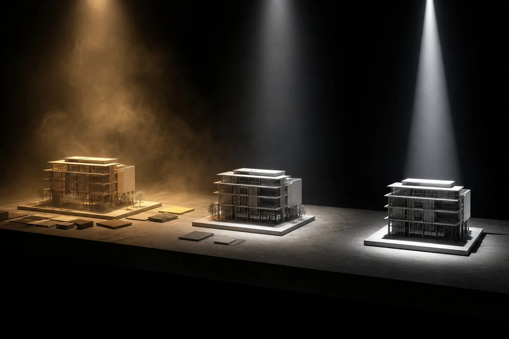

What is an AI render error budget?
An AI render error budget is a project-stage rule that defines which output changes are unacceptable, repairable or harmless before a tool is tested. It keeps an attractive image from excusing a moved opening, and stops reviewers from rejecting useful concept variation that the brief actually allowed.
A render arrives with excellent late-afternoon light and one extra floor. Someone says the image is “ninety percent there.” The missing ten percent appears to include the building.
Today's sweep returned tool comparisons with six, ten and eleven products. Their tables sort by speed, price, integrations and use case. Useful enough. Yet a studio cannot choose a renderer until it knows what the image is allowed to get wrong. A massing study and a planning submission should not share an acceptance line.
The error budget writes that line before anyone sees the glamorous output. It is not permission to ship mistakes. It is a limit on variation for a named use, plus a rule for what must be repaired or rejected.
Why do one-number rankings fail architecture?
Image quality compresses several unlike questions. Did the silhouette hold? Did specified brick remain brick? Does the reflection describe plausible space? Are trees covering the entrance? Is the color grade any good?
A single score lets strength in one category pay the debt in another. Lovely light can cancel an invented mullion in the arithmetic, although it cannot cancel one in the design. Our photorealism defect ledger separates the categories. An error budget adds consequence and stage.
A score averages defects. A budget decides which defects may enter the room.
That decision must precede generation. Once a persuasive image is on screen, reviewers negotiate with it. The planted terrace feels so convincing that the shifted door becomes “an easy fix.” It may be easy. Time it, repair it and count the collateral changes. Charm is not a repair method.
Set three classes, not a fog of quality
Use three plain classes. A fatal error invalidates the image for its intended use. A repairable error may proceed only when a named correction route exists within the time and cost limit. A harmless variation falls inside the brief and needs no action.
| Class | Meaning | Example |
|---|---|---|
| Fatal | Misstates the decision or cannot be reliably corrected | Changed opening in a facade approval view |
| Repairable | Bounded edit with known owner and allowance | Wrong plant species inside an editable mask |
| Harmless | Variation the image's purpose permits | Cloud form in an early atmosphere study |
“Repairable” is the dangerous middle. Attach a maximum operator time, generation count and credit allowance. If the limit is ten minutes and one inpaint, the second full rerender is a failure. This connects the budget to the revision-cost test instead of leaving cleanup as free invisible labor.
How should the budget change by project stage?
At concept stage, allow broad movement in material tone, planting, loose furniture and atmosphere. Primary massing, access, floor count and the question under study remain fixed. The image can speculate around the decision, never through it.
During design development, tighten openings, facade rhythm, major materials, fixed furniture and site edges. Texture variation may remain loose. Junctions visible in the view should match the model well enough that the image does not propose detail nobody designed.
For planning, client approval or public communication, shrink the budget again. Any change to scale, massing, openings, boundaries or a material under approval is fatal. Atmospheric variation may survive only when it does not obscure context or imply a false condition.
The same output can therefore pass one use and fail another. That is honest. “Good render” was never a stable category.
Write the budget as counts and regions
Vague standards invite vague exceptions. “Keep the architecture” has no review action. “Zero changed openings; zero moved slab edges; one local planting repair under ten minutes” does.
Mark protected regions on the source image and assign limits by defect type. Geometry can use counts and overlay displacement. Materials can use named zones and reference samples. Context can use fixed objects and approved concealment limits. The base-render acceptance gate keeps upstream model errors out of this accounting.
For a small exterior trial, the budget might read: no silhouette changes, no changed openings, no material crossing a marked boundary, up to two planting substitutions, one sky variation and no repair longer than fifteen minutes. Short. Severe. Useful.
What should a comparison table report?
Report defects against the same budget for every product. Keep the source, brief, output count and delivery size fixed. Show all attempts in a contact sheet. Then publish five results: fatal defects, repairable defects, repair minutes, harmless variations and accepted images.
That table says more than a rating out of ten. One tool may produce fewer fatal geometry errors but require dull material cleanup. Another may deliver stronger atmosphere with a poor keeper rate. A practice can assign each a role without pretending one is “best overall.”
Vendor comparisons deserve particular care. The current Chaos comparison of six AI render tools organizes products by BIM integration, starting price and use case. Rendero's eleven-tool comparison likewise distinguishes input and workflow. Those structures help readers shortlist. Neither page supplies your project's tolerance, and both come from companies selling products in the category. The studio still owns the acceptance rule.

Do not let the budget become a score-shopping exercise
Changing the tolerance after a favored tool fails defeats the method. Freeze the budget with the brief and source files. If every product fails, the likely answer is a narrower role, a better input or a different workflow. It is not a late amendment declaring doors optional.
Keep aesthetic review separate and blind it to product names when possible. Reviewers can choose the stronger image among outputs that pass the factual budget. A beautiful failure may remain in the creative discussion, clearly labeled, but it does not re-enter the approved set.
Also resist false precision. The budget is a project control, not structural engineering. Pixel displacement matters only when it signals a changed fact at the image's delivery scale. Count what a reviewer can identify and what a project decision depends on.
Where does the perfect-render promise go?
It goes where it belongs: outside procurement. Current archviz discussion still imagines a near future in which a model receives “make it nice” plus a Scandinavian reference and returns the perfect image. Perfect for which use? Which facts may move? Who repairs the corner?
The phrase avoids the uncomfortable work of defining acceptance. An error budget does the opposite. It admits that generative images vary, then places that variation under design authority. This is less romantic than a perfect-render button and considerably more useful on Thursday afternoon.
Before the next trial, write the fatal errors in red. The renderer can audition after the building has terms.
Evidence note: this is a proposed evaluation method, not an ArchiGen hands-on comparison. Sources checked 7 October 2026: current Chaos and Rendero AI rendering tool comparisons, plus current archviz community discussion about reference-led “perfect” rendering. Vendor table structures are described without adopting their product verdicts.